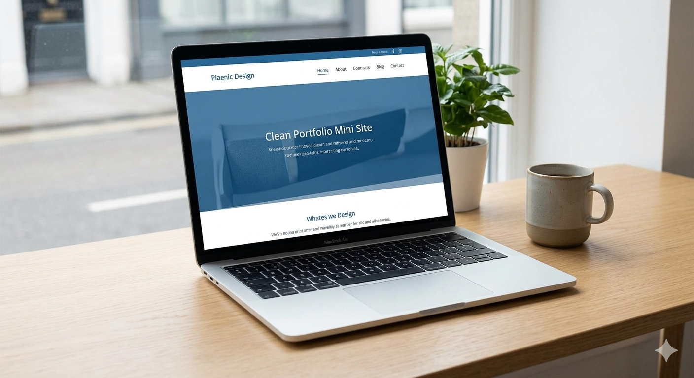
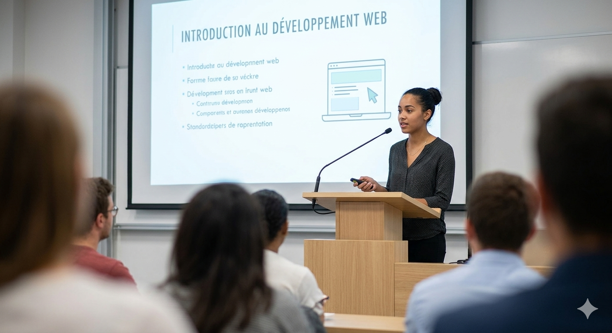
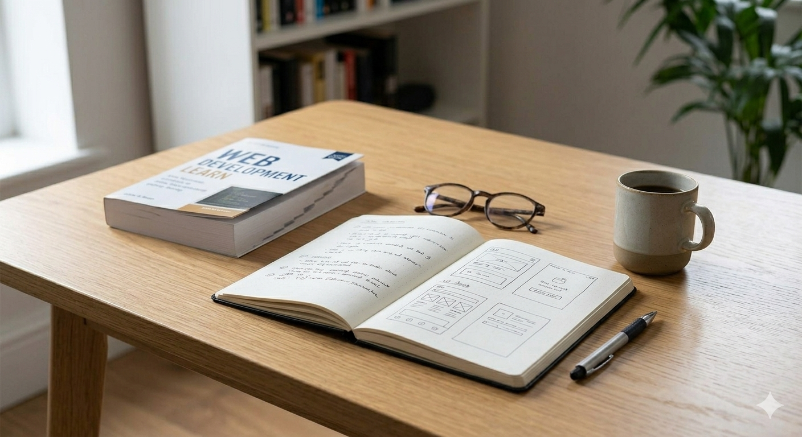

Mon parcours
Je suis une étudiante curieuse et motivée, avec un fort intérêt pour les outils numériques, le web et la communication visuelle. J'aime apprendre en pratiquant, construire de petits projets concrets et améliorer progressivement mes compétences.
Mes objectifs
Mon objectif est de développer un profil solide, capable de relier connaissances académiques, créativité personnelle et compétences techniques. Je souhaite bâtir un portfolio clair, sérieux et évolutif.
Mes qualités
Je suis organisée, persévérante, attentive aux détails et toujours prête à apprendre. J'aime les interfaces bien structurées, les contenus lisibles et les réalisations simples mais soignées.
Ce que je recherche
Je recherche des opportunités d'apprentissage, des collaborations académiques, et des expériences qui me permettront de progresser dans le développement web, le design et la valorisation de projets personnels.

Mini site vitrine
Réalisation d'un site simple, responsive et élégant pour présenter une activité, un service ou une identité personnelle.

Interface web
Conception d'une interface claire avec sections bien organisées, navigation intuitive et design moderne.

Projet JavaScript
Mise en pratique de la logique interactive, de la manipulation du DOM et de fonctionnalités dynamiques utiles.

Travail en groupe
Participation à des exercices collaboratifs pour améliorer l'organisation, la communication et le rendu final.

Présentation académique
Création de supports visuels structurés pour exposer un sujet de façon claire, cohérente et professionnelle.

Apprentissage continu
Exploration régulière de nouvelles méthodes, outils et bonnes pratiques pour améliorer mes réalisations.